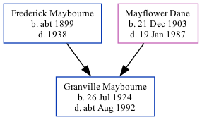

Granville Stanley Maybourne 1924 - c1992
[ Home ] | [ Calendar ] | [ Surnames Index ] | [ Family History ]A newsagents errand boy and the eldest of 3 children of Frederick Maybourne and Mayflower Dane, Granville Maybourne, the third cousin once-removed on the mother's side of Nigel Horne, was born in Faversham, Kent, England on Jul 26, 19241,2,3. On Sep 29, 1939, he lived at 75 West Street in Faversham1. 1939 Civilian Role: Air Raid Precautions in 1939.
He died c. Aug 1992 in Bexley, London, England3.
Parents
- Frederick T was born c. 1899
- Mayflower was born on Dec 21, 1903
Citations
- 1939 Register - Findmypast (was recorded at this address)
- England & Wales births 1837-2006 - Findmypast
- England & Wales deaths 1837-2007 - Findmypast
Media
England & Wales births 1837-2006 - BMD/B/1924/3/AZ/000892/061
1939 Register - TNA/R39/1715/1715J/004/09
England & Wales deaths 1837-2007 - BMD/D/1992/7/79143972
Family Tree
Generated by Ged2Site. Last updated on Jul 20, 2025